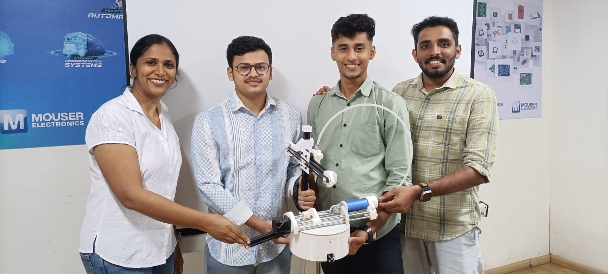
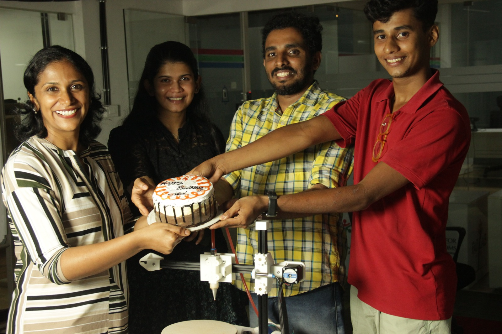

Week 10: Mechanical and Machine Design
Overview of the Project
We are Sayanth, Rayan, Ansu, Kavya, and Basil. We are building a Cakerator: Making baking sweeter, one cake at a time!   Link to our group assignmentThe Cakerator 2000 is a machine that takes cake decorating to the next level. It utilizes user-provided SVG files to automate cake decorating, drawing, and writing, allowing for precise and creative designs.
Features
SVG Input: The machine accepts SVG (Scalable Vector Graphics) files, a common design format that ensures precise translation of intricate details from the digital world to the cake.
Icing Dispenser: This attachment acts like a high-precision piping bag, controlled by the machine to create smooth and even frosting layers, borders, and decorative elements based on the SVG design.
Food-grade Extruder: This interchangeable attachment acts like a pen, using edible ink cartridges to draw intricate details, write messages, or create artistic flourishes directly onto the cake's surface.
- Automated Turn Table Cake Platform: The cake sits on a motorized platform that rotates and tilts according to the SVG instructions. This allows the toolhead to access all areas of the cake for a seamless and consistent decoration process.
Software Control: The Cakerator 2000 is controlled by user-friendly software to upload SVG files, choose frosting and pen colors, and initiate the decoration process. The software translates the design into G-code, which is then sent to GRBL for machine control.
Presentation Poster

Our Machine Week Journey
Concept and Story
As a dedicated home baker our friend Ansu always strived to create cakes that not only taste delicious but also look visually appealing. However, the process of decorating cakes has often posed challenges in terms of time and precision. Recognizing this common struggle, the team joined forces to develop a solution: the Cakerator2000.
Shared Interest: While her passion lies in baking, we as a team share a keen interest in engineering and machine building. Combining our skills and expertise, we saw an opportunity to collaborate on a project that would integrate both disciplines and address a real-world need within the baking community.
Learning Opportunity: Developing the Cake Decorating Machine provided us with a valuable opportunity to gain practical experience in designing, building, and testing a machine from concept to completion.
Problem Solving: Identifying the challenges faced by home bakers, particularly in the realm of cake decoration, sparked our collective problem-solving drive. We saw the opportunity to leverage automation and technology to streamline the cake decorating process and alleviate some of the burdens associated with manual decoration.
Innovation: As a team, we're driven by a curiosity to explore new ideas and push the boundaries of what's possible. The Cakerator2000 represents our commitment to innovation and our belief in the power of technology to enhance everyday experiences, even in the kitchen.
Collaboration: Working as a team has been an enriching experience, allowing us to leverage each other's strengths and perspectives. Through collaboration and communication, we've been able to overcome challenges, iterate on ideas, and ultimately bring our vision for the Cakerator2000 to life.
The decision to develop the Cakerator2000 was driven by our shared interests, desire for hands-on learning, problem-solving mindset, passion for innovation, and collaborative spirit as students. We're excited to showcase the results of our hard work and creativity, and we hope that the Cakerator2000 will not only benefit home bakers but also inspire others to explore the intersection of baking and technology.
Project Management
Integrating project management into the development of the Cakerator 2000 involves meticulous planning, organizing, and execution to ensure the successful realization of this innovative machine. Here's how project management principles can be applied to each aspect of the project:
- Initiation: The project begins with the identification of the need for a cake decorating machine and the formation of the team. Clear objectives are established, including creating a precise, user-friendly, and automated device that enhances cake decoration.
- Planning: Detailed planning involves defining project scope, setting milestones, allocating resources, and scheduling tasks. The team outlines the functionalities of the Cakerator 2000, such as SVG input, icing dispenser, extruder, and turntable cake platform. A timeline is established to guide the development process, ensuring adherence to deadlines.
- Execution: During this phase, the team implements the planned activities to construct the Cakerator 2000. Tasks include designing the machine components, sourcing materials, assembling the device, and developing the software interface. Regular communication and coordination among team members are crucial to maintaining progress and addressing any challenges promptly.
- Monitoring and Control: Project progress is monitored closely to track milestones, identify deviations from the plan, and address any issues that arise. Quality control measures are implemented to ensure that the Cakerator 2000 meets performance standards. Adjustments are made as necessary to stay within budget and schedule constraints.
By applying project management principles, the we can effectively coordinate their efforts, minimize risks, and deliver a high-quality product that meets the needs of home bakers. The Cakerator 2000 project exemplifies how project management practices can facilitate innovation and collaboration in interdisciplinary ventures.
Integrating project management into the development of the Cakerator 2000 involves meticulous planning, organizing, and execution to ensure the successful realization of this innovative machine. Here’s how project management principles can be applied to each aspect of the project:
- Initiation: The project begins with the identification of the need for a cake decorating machine and the formation of the team. Clear objectives are established, including creating a precise, user-friendly, and automated device that enhances cake decoration.
- Planning: Detailed planning involves defining project scope, setting milestones, allocating resources, and scheduling tasks. The team outlines the functionalities of the Cakerator 2000, such as SVG input, icing dispenser, extruder, and turntable cake platform. A timeline is established to guide the development process, ensuring adherence to deadlines.
- Execution: During this phase, the team implements the planned activities to construct the Cakerator 2000. Tasks include designing the machine components, sourcing materials, assembling the device, and developing the software interface. Regular communication and coordination among team members are crucial to maintaining progress and addressing any challenges promptly.
- Monitoring and Control: Project progress is monitored closely to track milestones, identify deviations from the plan, and address any issues that arise. Quality control measures are implemented to ensure that the Cakerator 2000 meets performance standards. Adjustments are made as necessary to stay within budget and schedule constraints.
By applying project management principles, the we can effectively coordinate their efforts, minimize risks, and deliver a high-quality product that meets the needs of home bakers. The Cakerator 2000 project exemplifies how project management practices can facilitate innovation and collaboration in interdisciplinary ventures.
Timeline

Work Schedule

Mind Mapping Using Miro
Utilizing miro.com for mind mapping proved to be instrumental in orchestrating the project management process for the development of the Cakerator 2000. Through this dynamic digital platform, the team seamlessly visualized and organized various project elements, from initial brainstorming sessions to detailed planning and execution phases. Miro's collaborative features enabled real-time collaboration, allowing team members to contribute ideas, outline project objectives, and delineate tasks efficiently. The platform's flexibility facilitated the creation of comprehensive project timelines, task lists, and resource allocations, ensuring clarity and alignment throughout the project lifecycle. Additionally, miro.com served as a centralized repository for project documentation, enabling easy access to essential files, updates, and communication threads. Overall, leveraging miro.com for mind mapping enhanced team collaboration, streamlined project management workflows, and contributed to the successful realization of the innovative Cakerator 2000.

Research & Brainstorming

Initial Sketch

Then we had to draw a basic sketch in Fusion 360, this helps to uderstand the foam factor of the machine.


Then we have divided the team to design the individual parts.
Individual Assignment - Cakerator 2000 - Electronics and Firmware

The project “Cakerator 2000” has been developed using the repo at
https://github.com/bdring/Grbl_Esp32/tree/main/Grbl_Esp32
, which is a specialized project that utilizes the ESP32 microcontroller to run GRBL, an open-source control software designed for CNC (Computer Numerical Control) machines. This project essentially adapts GRBL to leverage the advanced features of the ESP32 chip, such as Wi-Fi and Bluetooth connectivity, increased processing power, and more GPIO pins, which can be extremely beneficial for a wide range of CNC applications, from milling machines to laser cutters and beyond.

The specific files you've mentioned,
Machine.h
and
Polar_coaster.h
, play crucial roles in configuring the GRBL software for specific hardware setups. Here's how they fit into the customization of your "Cakerator 2000" automatic icing machine:
Machine.h
- Purpose: This header file is essential for defining the general hardware configuration for a CNC machine running GRBL on an ESP32. It acts as a template where you can specify various parameters such as motor settings, axis configurations, limit switch behavior, and more.
- Customization: For the Cakerator 2000, you would modify this file to match the mechanical and electronic specifics of your icing machine. This could include setting up the stepper motor parameters that drive the icing dispenser, configuring the axes to match the cake decorating area, and defining the limits and safety features to prevent the machine from moving beyond its operational boundaries.

Polar_coaster.h
- Purpose: This file is an example of a specific machine configuration that demonstrates how to set up a CNC machine with a polar (rotary) axis, which is somewhat akin to the movements needed for cake decoration. It's tailored for projects where circular or radial patterns are essential, making it a potentially good starting point for the Cakerator 2000.
-
Customization:
You would use
Polar_coaster.has a reference or a starting point for defining how the Cakerator 2000 moves the icing nozzle in circular patterns around a cake. Adjustments might include configuring the rotary axis to match the dimensions of the cakes you're decorating, tuning the speed for precise icing application, and setting up patterns specific to your decoration needs.

Steps to Customize and Use
Machine.h
and
Polar_coaster.h
for the Cakerator 2000
-
Clone the Repository:
First, you need to clone the GRBL_ESP32 repository to your local development environment to access the files.
git clone <https://github.com/bdring/Grbl_Esp32.git>
-
Understand the Default Configurations:
Spend some time understanding how the default
Machine.hand the examplePolar_coaster.hare set up. This understanding will guide you in customizing these files for your specific hardware.
-
Customize
Machine.h: Based on your hardware's specifications (e.g., motors, axis layout, size), start modifyingMachine.hto reflect the Cakerator 2000's setup. This will include setting up motor drivers, defining axis properties, and configuring limit switches.
-
Adapt
Polar_coaster.hfor Circular Movements: UsePolar_coaster.has a base to create a configuration that matches the rotational and linear movements needed for cake decorating. Adjust parameters for the rotary table that holds the cake and the linear axis that moves the icing nozzle.
- Test and Refine: After configuring the files, compile and upload the firmware to your ESP32 controller. Begin with simple test patterns to ensure that the machine moves as expected. Adjust the configurations as necessary to fine-tune the machine's performance.
- Develop Decoration Patterns: Finally, develop G-code patterns or software interfaces to design and implement the decoration patterns you wish to apply with the Cakerator 2000.
Using PlatformIO, an open-source ecosystem for IoT development, to work with the GRBL_Esp32 GitHub repository and to identify and configure pins as per a specific file in another repository involves several steps. PlatformIO simplifies the process of compiling and uploading firmware to microcontrollers. Here's how you can proceed:

Working with the GRBL_Esp32 Repository
- Install PlatformIO : If you haven't already, download and install PlatformIO IDE or PlatformIO Core. The IDE can be used as a plugin for VSCode or Atom, offering a graphical interface and easier project management.
-
Clone the GRBL_Esp32 Repository
: Use git to clone the GRBL_Esp32 repository to your local machine.
git clone <https://github.com/bdring/Grbl_Esp32.git>
- Create a New Project in PlatformIO : Open PlatformIO and start a new project. Select the ESP32 as your board and specify the location of the cloned repository as the project directory.
-
Configure the Project for GRBL_Esp32
:
- Copy the necessary files from the GRBL_Esp32 repository into your PlatformIO project folder.
-
Ensure
Machine.hand any other files you plan to customize are included in the src folder of your PlatformIO project.
-
Customization
:
-
Modify
Machine.hand/or create a new configuration header file based onPolar_coaster.hor any other template file you're using from the GRBL_Esp32 repository, tailored for your Cakerator 2000.
-
Modify
-
Compile and Upload
:
- Use PlatformIO's build system to compile your project.
- Upload the firmware to your ESP32 board using PlatformIO's upload tool.
Identifying and Configuring Pins Using the NeoPI_Wireless Repository
-
Review the Pin Configuration
:
-
Open the
NeoPI_W_v1.hfile from the NeoPI_Wireless repository .
- This file contains definitions for various pins and their roles in the project. It's critical to understand these roles to properly map them onto your hardware.
-
Open the
-
Adapt Pin Configuration for Your Project
:
-
Based on the pin definitions in
NeoPI_W_v1.h, you'll need to adjust the pin assignments in your GRBL_Esp32 project (likely withinMachine.hor your specific machine configuration file) to match the physical hardware connections of the Cakerator 2000.
-
Based on the pin definitions in
-
PlatformIO Project Update
:
-
After identifying the necessary pin configurations and making adjustments, update your PlatformIO project files accordingly. This may involve editing the
platformio.inifile for any specific library dependencies or environment configurations, in addition to your source code changes.
-
After identifying the necessary pin configurations and making adjustments, update your PlatformIO project files accordingly. This may involve editing the
-
Compile and Upload Again
:
- With the new pin configurations in place, compile your project again using PlatformIO.
- Upload the firmware to your hardware and conduct tests to ensure the pin mappings are correctly implemented and functional.
Throughout this process, it's vital to thoroughly test each change to ensure compatibility with your hardware setup and desired functionality. PlatformIO's serial monitor and debugging tools can be very helpful for troubleshooting any issues that arise during development.

The GRBL_Esp32 repository is a notable fork of the original GRBL project, tailored for the ESP32 microcontroller, which offers a significant upgrade in terms of processing power, memory, and connectivity options compared to the microcontrollers traditionally used with GRBL. One of the standout features of this adaptation is its support for a Web UI (Web User Interface), enabling users to interact with the CNC machine over a network. This feature is especially useful for projects like the Cakerator 2000, where ease of use and flexibility in design and operation can greatly enhance the user experience.
Use of Web UI in GRBL_Esp32
The Web UI allows users to perform a wide range of actions remotely and wirelessly, which includes, but is not limited to, uploading G-code files, monitoring the machine's status, and controlling its operations in real-time. Here's how you can leverage the Web UI for developing and uploading G-codes for making designs:
Setting Up the Web UI
- Connect the ESP32 to Your Network : After flashing the GRBL_Esp32 firmware to your ESP32, configure it to connect to your Wi-Fi network. This is usually done through a one-time setup over a serial connection, where you provide your network's SSID and password.
- Access the Web UI : Once the ESP32 is connected to your network, it will be accessible via a web browser. You can find its IP address either from your router's DHCP client list or it might be displayed on the console (serial monitor) of the ESP32 upon startup.
- Navigate the Web Interface : The Web UI is typically straightforward, offering sections for machine control, job status, file management, and system settings. Its responsive design should work well on both desktop and mobile browsers.
Developing and Uploading G-Codes
- Design Your Cake Decorations : Using any G-code generating software, design the patterns or text you want to decorate your cake with. Ensure the designs are compatible with the motion capabilities of the Cakerator 2000.
- Upload G-Code Files : Within the Web UI, navigate to the file management or G-code upload section. Here, you can select and upload the G-code files from your computer to the ESP32's onboard storage or an attached SD card, depending on the setup.
- Select and Run Your Design : After uploading, you can select the G-code file you wish to execute from the file list in the Web UI. Initiating the job typically involves clicking a "start" or "run" button within the interface.
- Monitor and Control the Job : While the Cakerator 2000 is operating, you can use the Web UI to monitor its progress, pause or stop the job if necessary, and even adjust certain parameters like feed rate and spindle speed in real-time, as your setup and firmware configuration allow.
GRBL


Benefits of Using the Web UI for Cakerator 2000
- Wireless Operation : Eliminates the need for a direct physical connection between the computer and the machine, allowing for more flexibility in the setup.
- Ease of Use : Offers a user-friendly interface for uploading and managing G-code files, making it accessible even for users with limited CNC experience.
- Real-Time Control and Monitoring : Provides immediate feedback on the machine's status and allows for on-the-fly adjustments, which is crucial for fine-tuning the cake decorating process.
Testing
After the GRBL configuration, we tested our machine with Tomato sauce, which was easily available at nearby store and it has some viscosity, just like chocolate Ganache
Playback speed 4x 👆